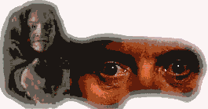

DVD Review Archive
Feature Archive Back Issues Links DVD MIA DVD
Alerts Movie Posters Laser Site Info Home E-mail
© 2002 Films on Disc Stuart J. Kobak ALL RIGHTS RESERVED.
|
|
Silence of the Lambs is a stunning example of fusing diverse movie
elements into a whole greater than the sum of the parts. Herein lies the great achievement of
Jonathan Demme in his Academy Award winning directing turn. The director conducts his players to a
work of precise balance that delivers more pleasure than one could expect from the horrific nature
of the material. It is easy to kneel at the throne of Anthony Hopkins' thoroughly delicious
performance as Hannibal Lector. Jodie Foster  Demme combines with screenwriter Tally to weave a fabric of many genre strands. Silence of the Lambs is certainly a psychological thriller in the classic sense; it also relates closely to the sub-genre of a police procedural action film; and sections could have been lifted directly from a horror film. Dealing with the details of a deviate serial killer present many unexpected obstacles of questionable taste, and indeed the film has had its share of criticism leveled at it for its depiction of the serial killer. The team succeeds enviably in navigating this pothole ridden road on an even keel. It is a measure of the thought that went into the production of Silence of the Lambs that the methodical layout of its land rings true. The only moment at which I felt slightly betrayed is when the FBI crew is about to break into the supposed hideaway of serial killer "Buffalo Bill." Although this suggestion is emphatically reinforced by the editing, a quick cut to Jodie Foster at a doorway silences that avenue as the killer casually greets Starling. Perhaps a minor point, and it certainly does provoke the intended surprise, but it has rankled over numerous viewings. The acting is splendid. Hopkins has a field day as "Hannibal the Cannibal" Lector, brilliant, twisted, urbane and demented. This is a very controlled performance that balances atop a high wire from which one false step could spell disaster. Hopkins is up to the task. He's so good he probably could be doing head stands on that thin wire. Hopkins seduces his audience just as he seduces agent Starling. Jodie Foster has the more difficult role playing all those crucial scenes opposite the fireworks of Lector. Foster manages in the short course of the movie to create a fully realized character, one who draws strength from her relationship with the perverted psychiatrist Lector. It was unusually just that each received the recognition of the Academy. Scott Glenn, as Clarice's boss, agent Jack Crawford, is very convincing support for Foster and Ted Levine as Jame Gumb, a.k.a. "Buffalo Bill," is absorbed in his role to frightening and sickening effect. Demme's long time collaborator, Tak Fujimoto, out does himself in his work on this film. The lighting and camera movement provide the perfect ambiance through which to view the movie. Howard Shore's relentless score likewise compliments this impeccable production. This is not the first incarnation of Silence of the Lambs on laser, but it is the virgin widescreen edition and it is a rewarding special edition put together by the Voyager Company with a host of extras. The most important and primary feature is the audio commentary that accompanies the feature on analog track 2. The producers of the disk have assembled comments from Jonathan Demme, Jodie Foster, Anthony Hopkins, Ted Tally, and FBI agent John Douglas. Much of the commentary is not scene specific and it is not clear whether the participants are watching the film as their comments are made, but Criterion's style of alternating comments between the five participants keeps the narration from bogging down into an overbearing drone. The film is so enthralling that it plays powerfully right through the audio commentary. It is an invaluable treasure to have these principals commenting upon this award winning film. I would have liked more Hopkins and more Foster, perhaps less Douglas, but only through sheer greed. Surprisingly there are few technical details discussed. It would have been edifying to have more comments concerning the deleted scenes. Along with the commentary, there are seven deleted scenes, none of which are missed in the film, with the preacher scene "screaming" self-indulgence (But, it was cut!) Film to storyboard comparisons, which are included, always provide an insight into the filmmaker's work style. The discs are filled out with gallery of production stills, filmographies and profiles and a primer of information on serial killers.
|
|
|